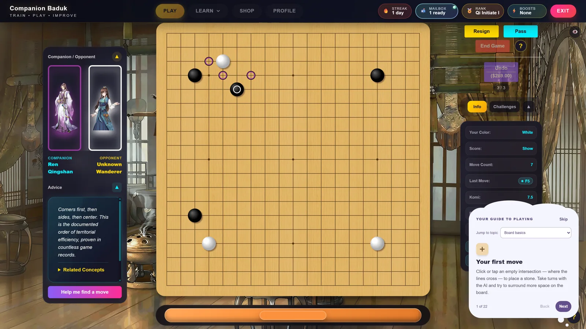
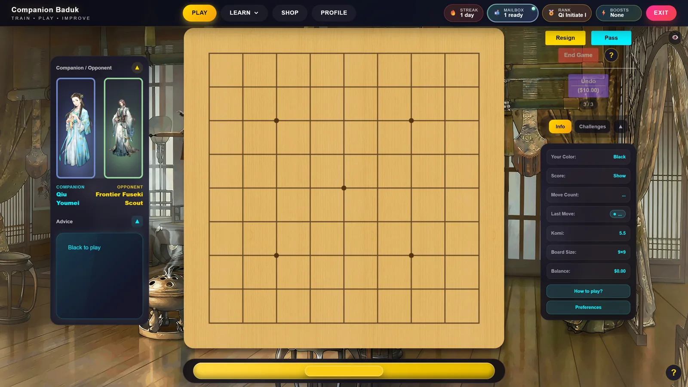
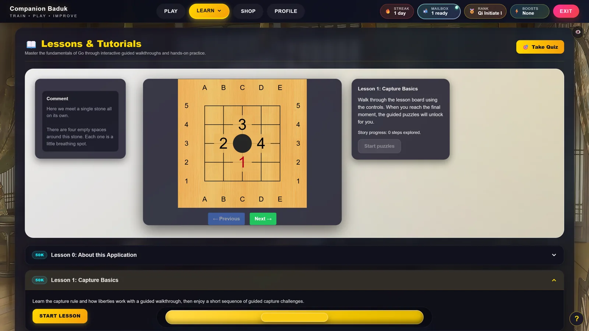
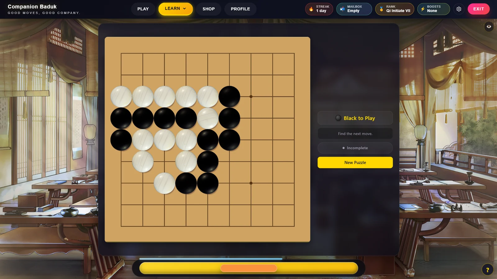
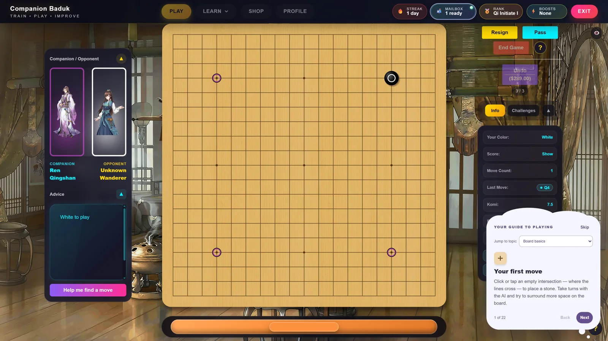
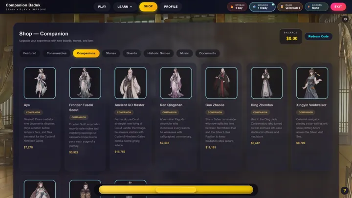
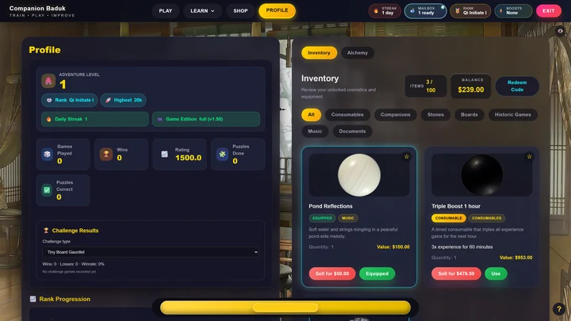
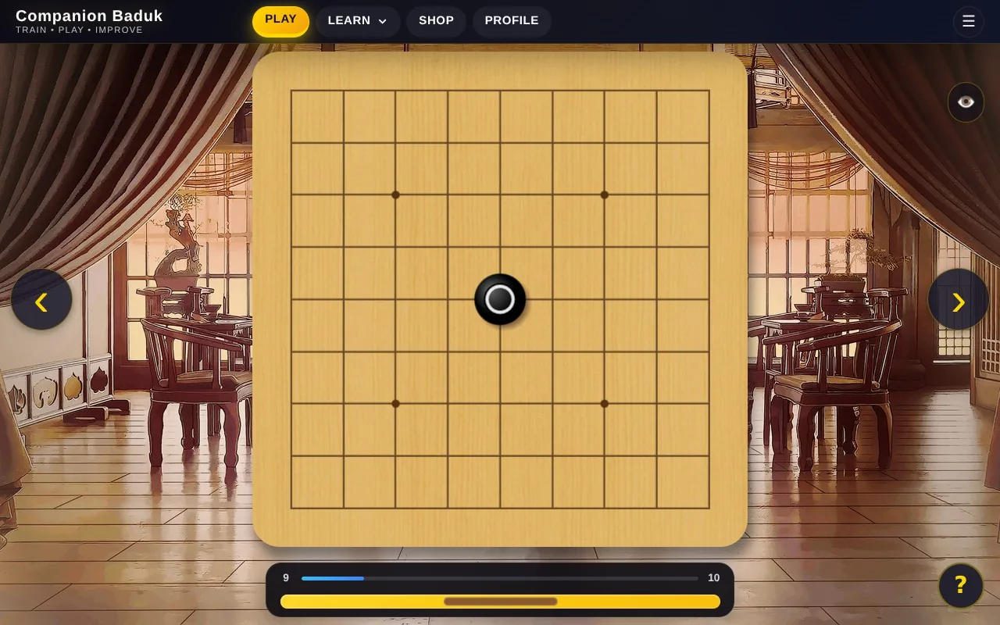

A little curiosity. A lot of Go.
Your next
Go adventure.
Small stones. Big possibilities. Meet your AI companions, try a hands-on lesson, and puzzle your way to that lovely “aha!” moment. Your seat at the board is waiting.
Available now on Steam · Single-player · Windows
Good company. Interesting moves.
✦

See where curiosity takes you.01 / THE BOARD
Scenery follows your local time
Follow your curiosity
Make a move.
Make a discovery.
Go, Baduk, Weiqi: three names for one wonderfully deep game. Start with a few simple rules, then see where they take you. Games, lessons, and puzzles keep your next discovery just a stone’s throw away.
Meet your next
friendly rival.
A new face across the board, a new way to play. Pick an AI companion with their own personality and playing strength, choose your board size, and give that interesting-looking move a try.


Less head-scratching.
More “got it!”
Never placed a stone? You’re in good company. Get to grips with captures, explore handy shapes, and try each idea on the board. Little lessons make room for big lightbulb moments.


One little puzzle.
One lovely “aha!”
Can you spot the move that makes it work? Tackle life-and-death puzzles, known as tsumego, stretch your reading skills, and enjoy the click when the stones fall into place.


A closer look
A board. A buddy.
A few possibilities.
Come for the next move. Stay for the companions, the little discoveries, and a board that feels like yours.








A small board. A little escape.There’s always time for one more stone
Get comfy.
Get curious.
A quick puzzle with your tea. A lesson before bed. A game that turns into “just one more.” Pull up a cushion and make a little space for Go.
Shown running on Steam Deck. Valve’s official compatibility rating is currently unknown; this is not a Verified claim.
Explore on SteamDo I need to know how to play Go?
You can start with your very first stone. Interactive lessons introduce the fundamentals, while puzzles and AI opponents give you room to practice and build confidence.
How do I get Companion Baduk?
Companion Baduk is available on Steam. Get the game to play against AI companions, follow interactive lessons, and practice with Go puzzles in one place. The Steam listing has pricing and system requirements.
Is there online multiplayer?
Companion Baduk is a single-player experience. You play and practice against AI companions. It does not currently include online multiplayer.
Which platforms are supported?
The Steam listing currently specifies Windows 11 and a 64-bit processor. Our screenshots also show the game running on Steam Deck, but its official Steam Deck compatibility rating is unknown. See Steam for current system requirements.
Does the game automatically send any data?
The game does not automatically report gameplay data or diagnostic logs to us. If you need help, you can choose to email us your logs. Steam operates under its own privacy policy. Read our privacy policy for details.
How can I share feedback or report a bug?
Email companionbaduk@gmail.com or join the Steam discussions. Our support page explains what information helps us investigate.
Good company. Endless curiosity.
Go on.
Make your next move.
Get Companion Baduk on Steam
Your next little adventure is a stone’s throw away.